Attune help and support
Attune records your meetings on your Mac, writes the transcript with the right name next to every line, and turns it into minutes, short messages and answers. You decide, per meeting, what may leave your Mac.
What Attune does for you
- Records both sides of a call — your microphone and everything your Mac plays — without a bot joining the meeting.
- Knows who is speaking. Name a voice once; Attune recognises it in every later meeting.
- Writes minutes and messages in your formats: minutes with a TL;DR, an email summary, a Teams or WhatsApp message.
- Answers questions about one meeting or all of them, with quotes you can check.
- Voice notes: say what's on your mind; Attune files it per client, keeps personal things apart and drafts the emails you ask for.
- Shows what it costs in AI tokens, per meeting and per month.
Getting started
Install
- Download Attune (Macs with Apple silicon, macOS 14.4 or later). Open Attune-1.0.0.dmg and drag Attune into Applications. Open it from there.
- macOS asks for Microphone and System Audio Recording access the first time you record. Allow both — the first records you, the second the other participants.
- Attune lives in the window and in the menu bar (the waveform icon). Closing the window keeps it running, so calls are still noticed.
Tell Attune who you are
Open ~/Library/Application Support/Attune/config.json in TextEdit and replace the examples with your name,
company, notes folder (for example your Obsidian vault), your email domains and the languages you speak in meetings.
Attune only transcribes in those languages, which makes it more accurate.
Choose your engines
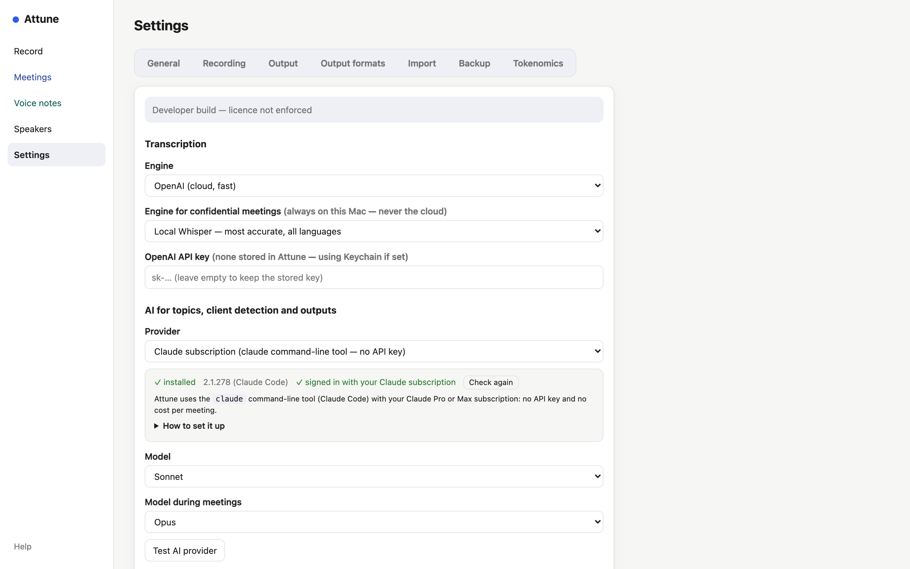
| Job | Choices | Good to know |
|---|---|---|
| Transcription | OpenAI · Whisper (on this Mac) · Apple (on this Mac) | OpenAI is the most accurate on difficult audio; Whisper and Apple never send audio anywhere. |
| AI for minutes, topics, Ask AI | Claude subscription or API · OpenAI · ChatGPT subscription · built-in model | A subscription needs the claude or codex app signed in once. The built-in model runs on your Mac. |
Click Test AI provider to check the connection. Local models download the first time they're needed (a few GB, once).
Mark yourself
In Speakers, open your own profile and click This is me. Minutes then list your tasks separately and Ask AI answers for you.
Recording a meeting
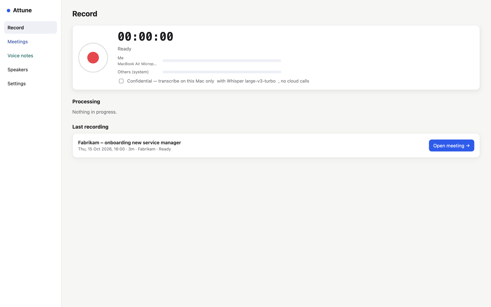
Start and stop
- Start: the big red button, ⌘R, or Start Recording in the menu bar.
- Let Attune notice the call: when a Teams or WhatsApp call starts, Attune asks Record / Confidential / Not now. In Settings › Recording it can also start and stop by itself.
- Pause (⌘P) leaves a stretch out of the recording. Stop (⌘S) sends the meeting to processing — you can start the next meeting right away.
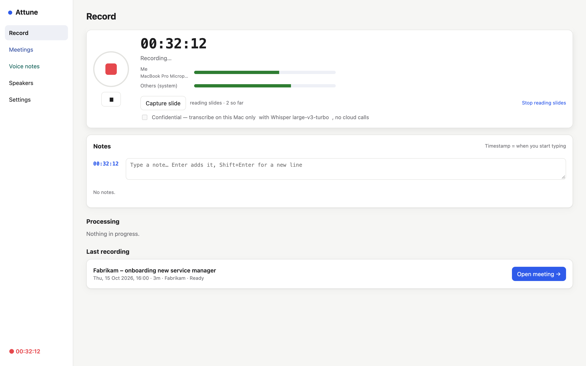
During the call
- Notes — type and press Enter. Each note gets the time you started typing and ends up in the minutes.
- Live transcript — updated every few minutes, so you can check what was said or ask a quick question.
- Slides — see Slides: capture the slide that's shared right now with ⌃⌥S.
Finding meetings
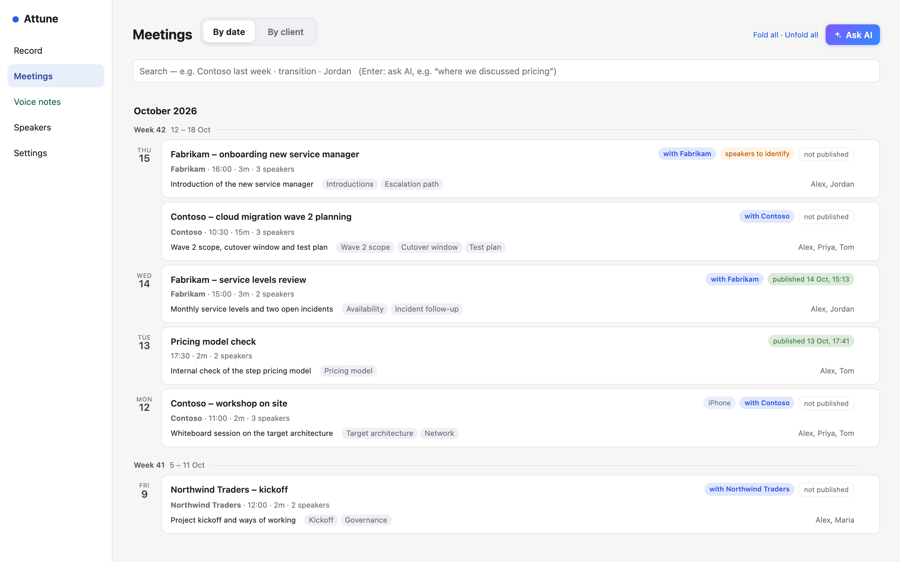
- By date or by client — the switch at the top. A meeting with two clients appears under both.
- Fold a month, week or client by clicking its heading; ⌥-click folds every heading at that level. Fold all gives you an overview in one click. Attune remembers what you folded.
- Search — type a client, person, topic or date ("Contoso last week") for an instant result. Press Enter and the AI reads your question ("where did we discuss pricing?") and searches the transcripts too.
- Voice command — hold ⌥ Space and say it: "open the last meeting with Priya".
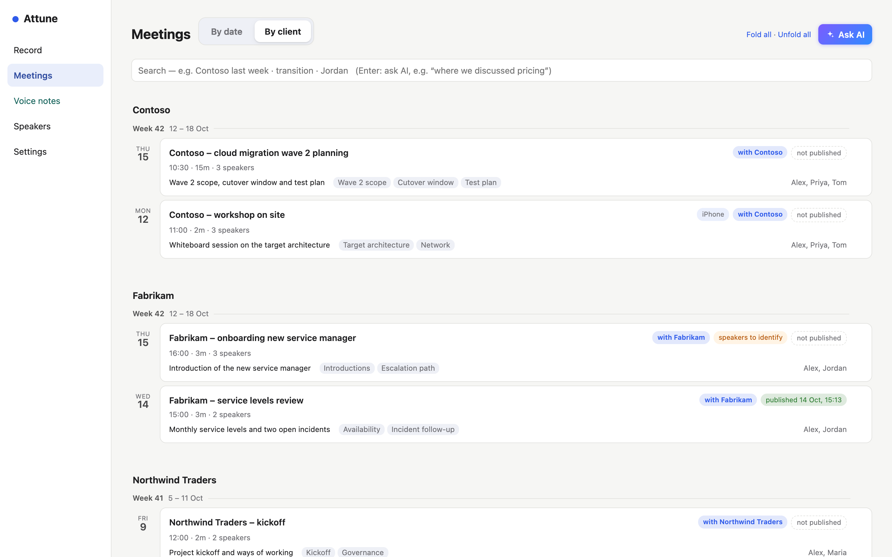
A meeting: transcript and speakers
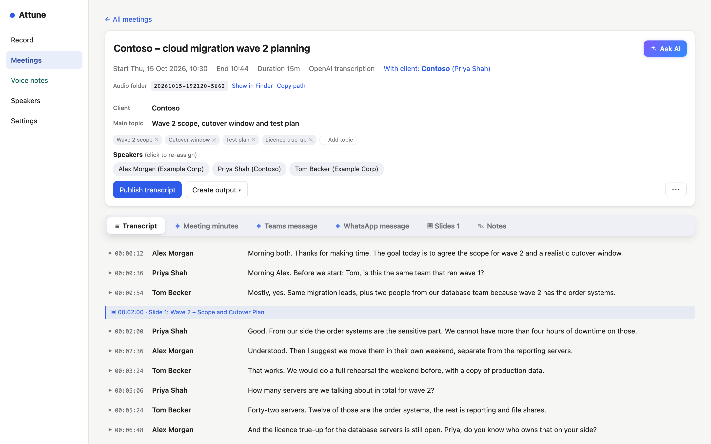
Listen and correct
- Click a line and press Space to play the meeting from there.
- Press Delete to remove a line (for example an echo of someone else under your name) — with undo.
- Click a speaker's name on a line to give that line to someone else.
Name a voice once
New voices appear as Speaker 01, Speaker 02 in orange, and in the Unidentified bar. Click one: the speaker menu lets you show only their parts, delete everything they said, or re-assign them to a person — Attune suggests people whose voice sounds similar. Type a new name as "Name, Company" to create someone. From then on Attune recognises that voice.

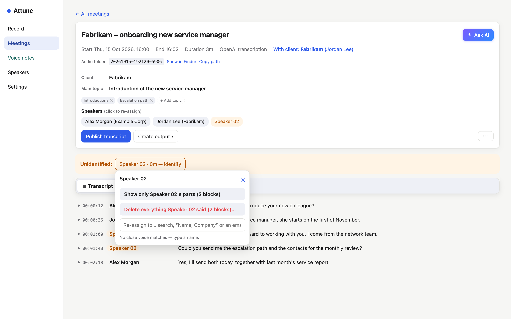
Publish
Publish transcript saves the transcript to your output folders (Settings › Output). The button then shows when you published, and turns amber when the meeting changed afterwards — publish again to update the file.
Minutes, Teams and WhatsApp messages
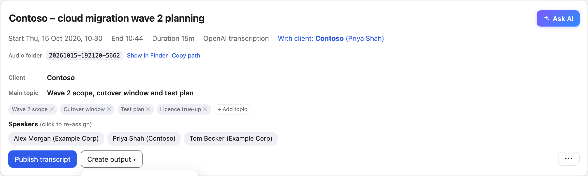
| Format | What you get |
|---|---|
| Meeting minutes | TL;DR, summary, decisions, action items with owners, and your own tasks. |
| Email summary | A short summary to paste into an email to the participants. |
| Teams message | Under 125 words: "I had a call with …", then the questions with their answers, what was agreed, and the actions. |
| WhatsApp message | Under 85 words, in WhatsApp's own formatting. |
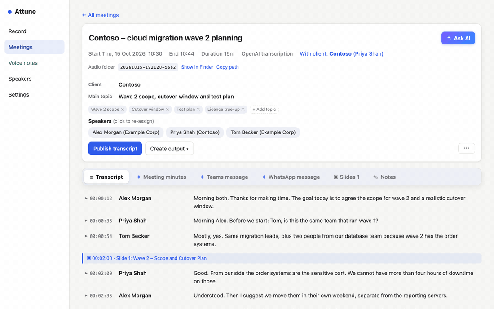
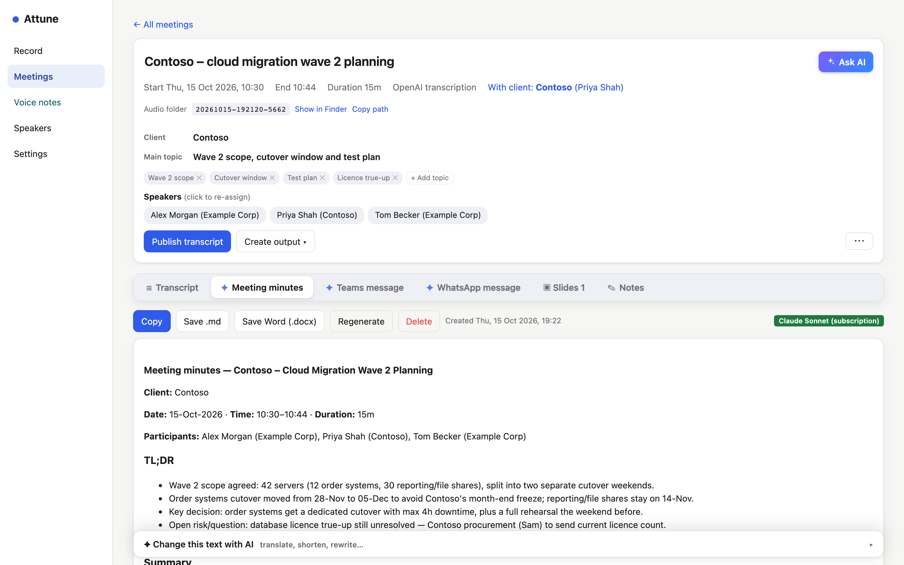
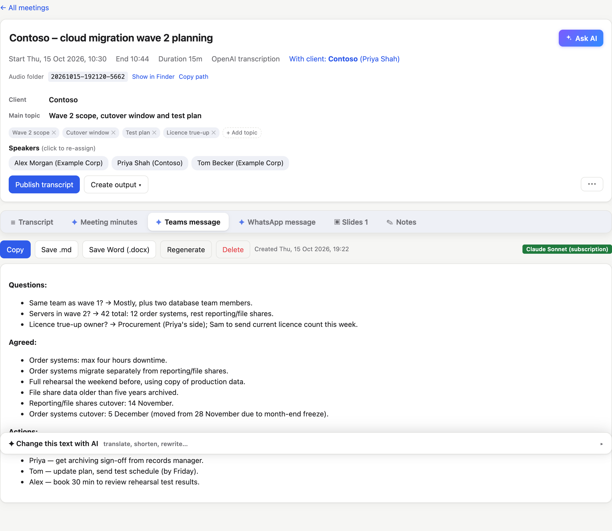
Change it with AI
Under the text, type an instruction — "translate to German", "shorter", "from my perspective", or a question like "who was there?" — and press ⌘↵. Undo and Restore original bring back earlier versions.
Your own formats
In Settings › Output formats you edit the instructions of each format or add your own (a status report, a client recap…).
Placeholders such as {title}, {date}, {participants} and {me} are filled in.
A limit like "at most 100 words" is enforced: longer texts are shortened automatically.
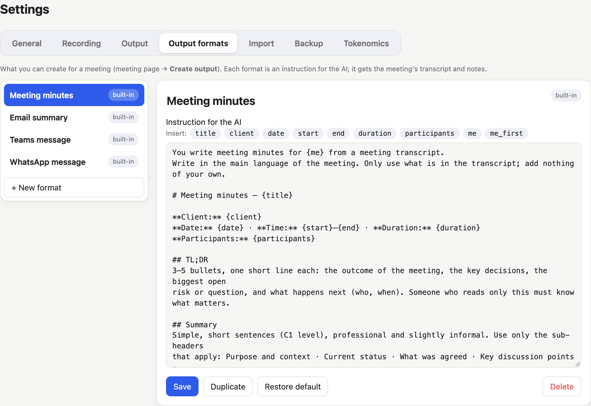
Ask AI
Click Ask AI in a meeting and ask in plain words: "short summary", "what did I promise?", "what changed since last week?". Answers come from what was said and from your notes, with timestamps. Add related meetings to ask across them.
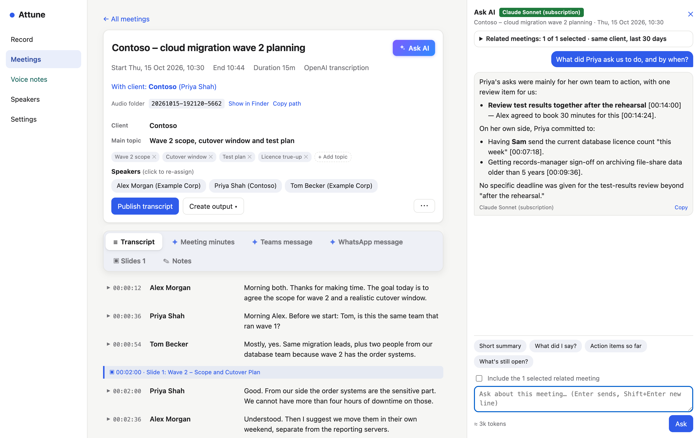
Ask AI on the Meetings page searches all your meetings and returns points with quotes that were checked against the transcripts.
Slides
Slides shared in a Teams meeting can be kept next to the transcript. The AI describes each slide and its figures, and the minutes refer to them.
- Capture slide — on the Record screen, in the menu bar, or ⌃⌥S from any app: keeps the slide that's shared right now, nothing more.
- Read slides automatically — Settings › Recording (an experiment). Attune follows the shared screen and keeps every new slide. Stop reading slides ends this for the rest of the meeting; slides so far are kept.
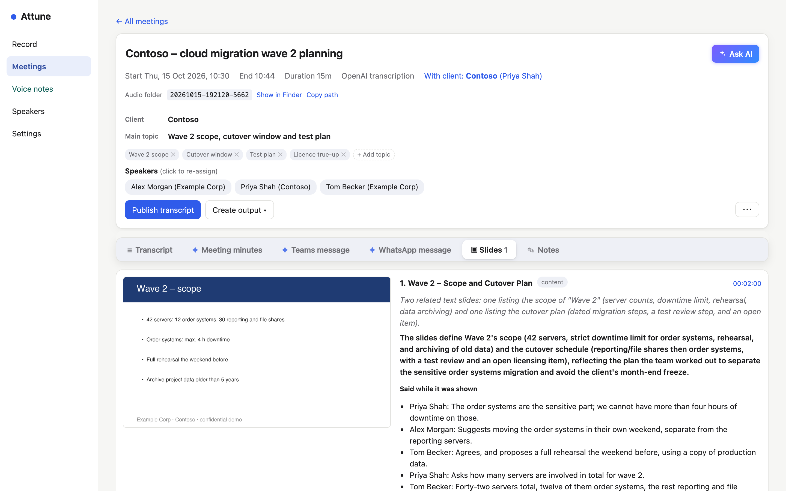
Voice notes
Say (or type) whatever is on your mind — a reminder, a thought about a client, a to-do. Attune transcribes it, summarises it, splits it per client, keeps personal things apart and writes the drafts you ask for.
Make a voice note
- From any app: press ⌃⌥N, talk, press ⌃⌥N again to save. The menu bar icon turns into a teal microphone while you talk.
- In Attune: the card at the top of Voice notes — record, type, or both.
- On your iPhone: see The iPhone app.
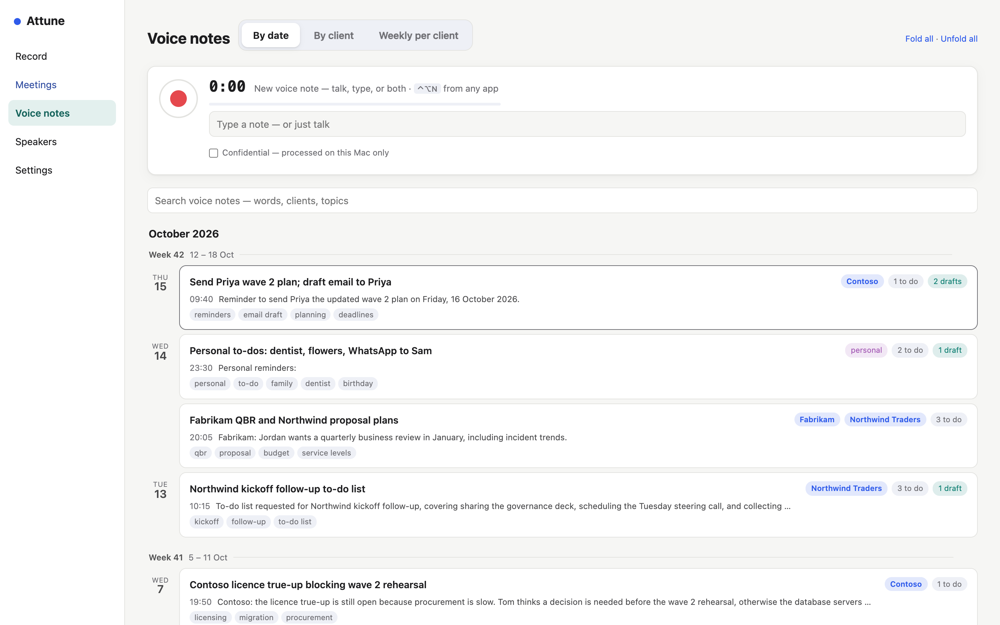
Three ways to look at them
| View | Shows |
|---|---|
| By date | Month › week, with the day in the margin. |
| By client | Client › week. A note about two clients is under both, each time showing what was said about that client. Work without a client and Personal come last. |
| Weekly per client | One note per client per week, combined from all voice notes — no repeats, the latest state wins. |
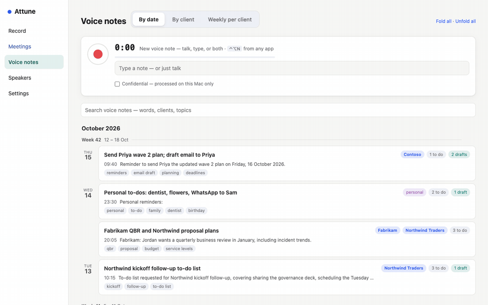
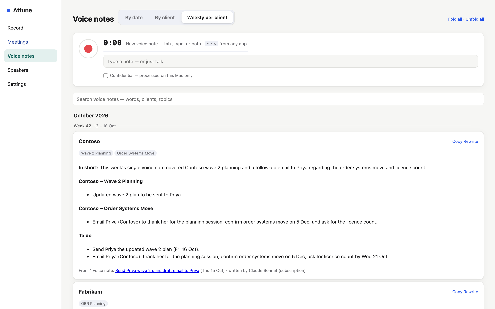
How Attune splits a note
- Every point goes to exactly one client — the client whose matter it is about.
- A client mentioned only as a reference ("reuse the Fabrikam structure for Northwind") stays with the client being discussed.
- Family, friends, holidays, health and private errands go to Personal, never into a client note.
Drafts
Ask for something in the note — "draft an email to Priya about…", "write a WhatsApp to Sam that…", "make a to-do list for…" — and Attune writes it in your style. Emails open in Mail with one click.
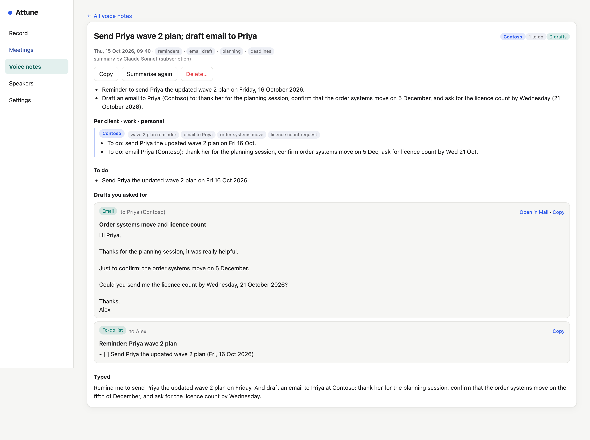
Teach Attune your style in Settings › Output › How I write: describe how you write, and paste a few emails you sent.
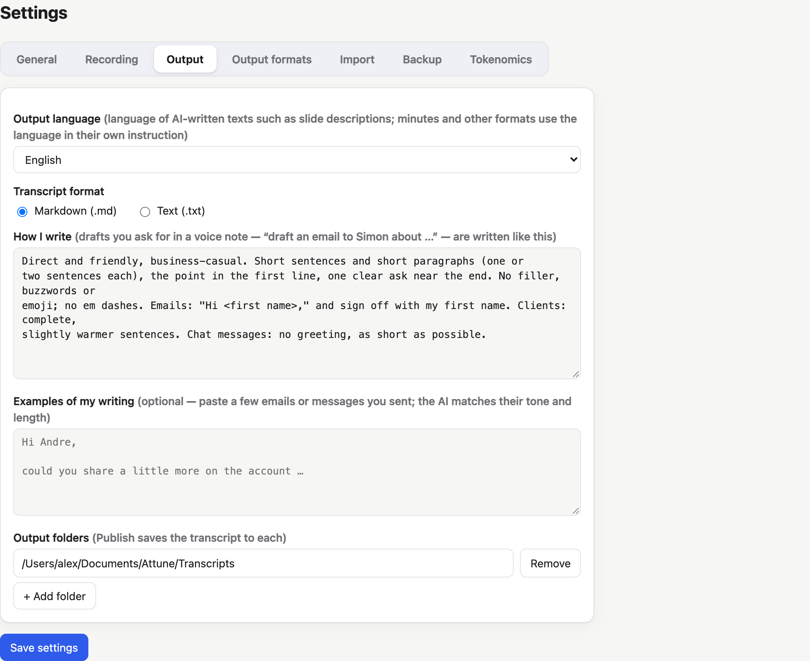
The iPhone app
The Attune iPhone app records voice notes and meetings in the room — everyone around the table on one recording. Recordings go to your Mac through iCloud: it works even when the Mac or the app is closed; they arrive when it wakes up.
- Note — talk (with live text on the phone) or type; Stop sends it.
- Meeting — put the phone in the middle of the table; it keeps recording with the screen locked. The Mac tells the speakers apart; the meeting appears under Meetings with an iPhone badge.
- History — every recording with its status (Sent › On Mac › Done), the summary and drafts from the Mac, ready to share to WhatsApp or Teams.
Speakers and the voice library
Every time you name a voice in a meeting, Attune keeps a short voice sample (a voiceprint) of that person. In the next meeting it compares each new voice with all the samples it has and fills in the name when one person clearly matches. The Speakers page is where you look after that library.
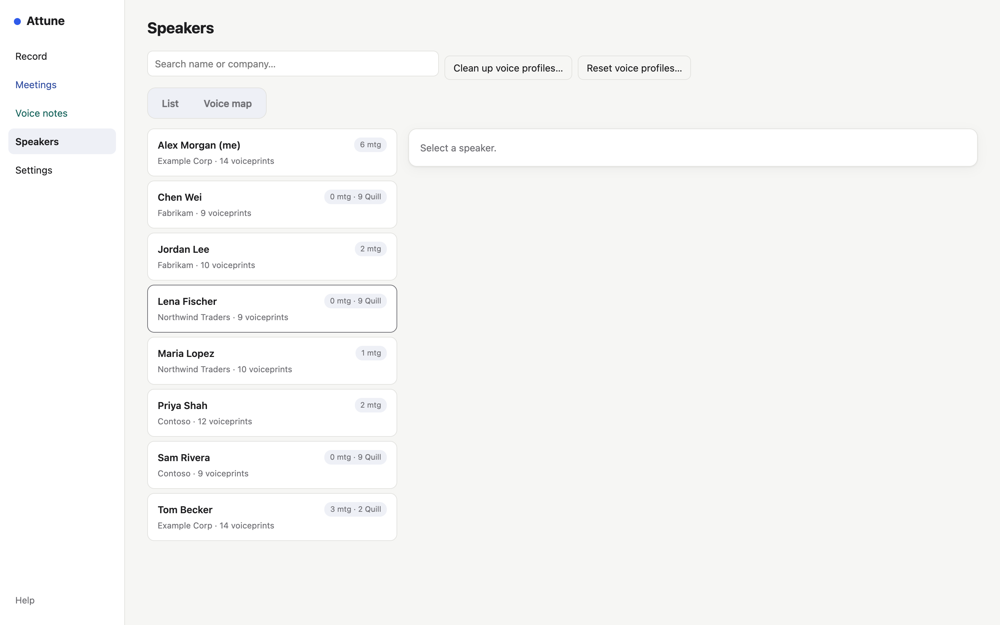
A person's profile
Click a person to open their profile: name, company and pronouns (used by the minutes and Ask AI when they write about that person), This is me for your own profile, and the meetings they were in. Under Voice you see how healthy their voice profile is.
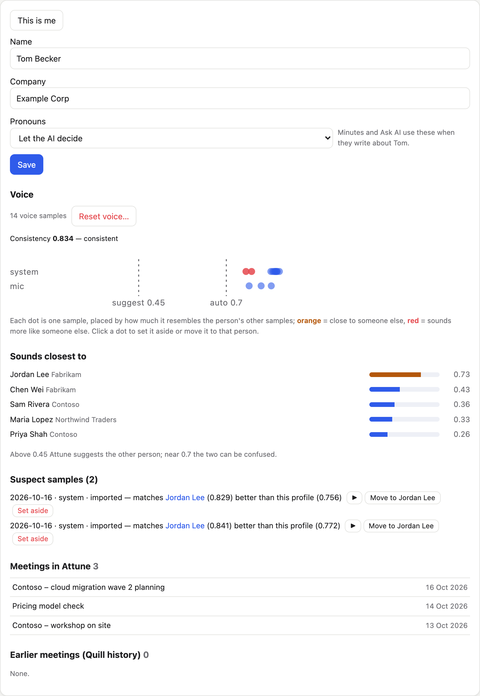
- Consistency — how alike the person's own samples are (0 to 1). Above 0.75 is consistent; lower usually means different microphones, a headset versus a meeting room, or a sample that isn't theirs.
- The dots — one per sample, placed by how much it resembles the person's other samples; the top row is Teams/system audio, the bottom row your microphone. Orange is close to someone else, red sounds more like someone else than like this person.
- Sounds closest to — the people whose voice resembles this one most. Above 0.45 Attune starts suggesting the other person; close to 0.70 the two can be confused and named automatically as each other.
- Suspect samples — samples that match someone else better than this profile, with ▶ to listen and buttons to move or set them aside.
The voice map
Switch from List to Voice map to see the whole library at once. Every dot is one voice sample; similar voices sit close together, so each person should form one tight group of their own colour (● microphone, ○ Teams/system). Hover a dot to see whose it is; click it to open that person.
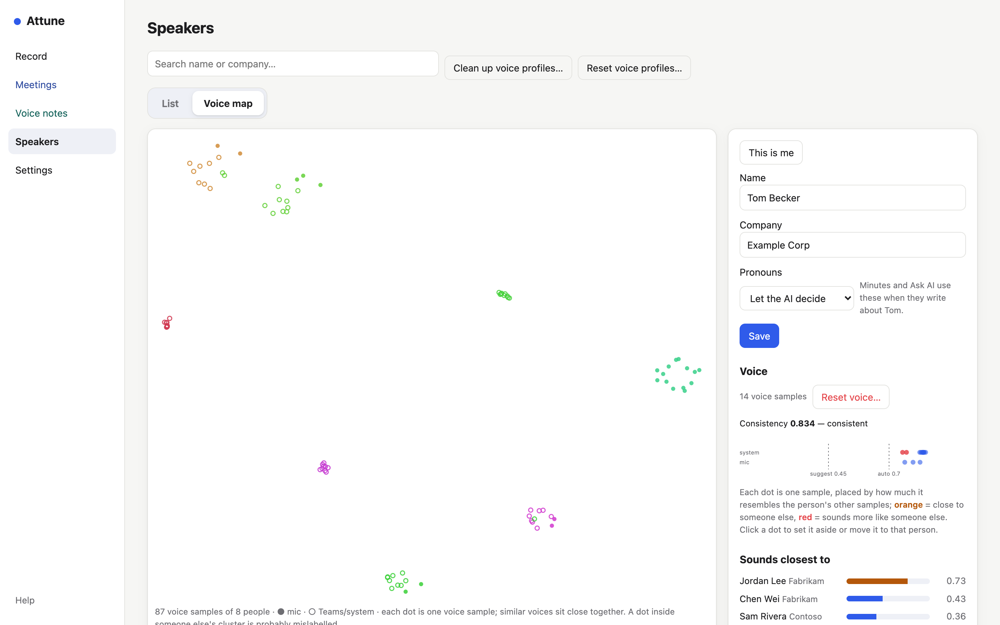
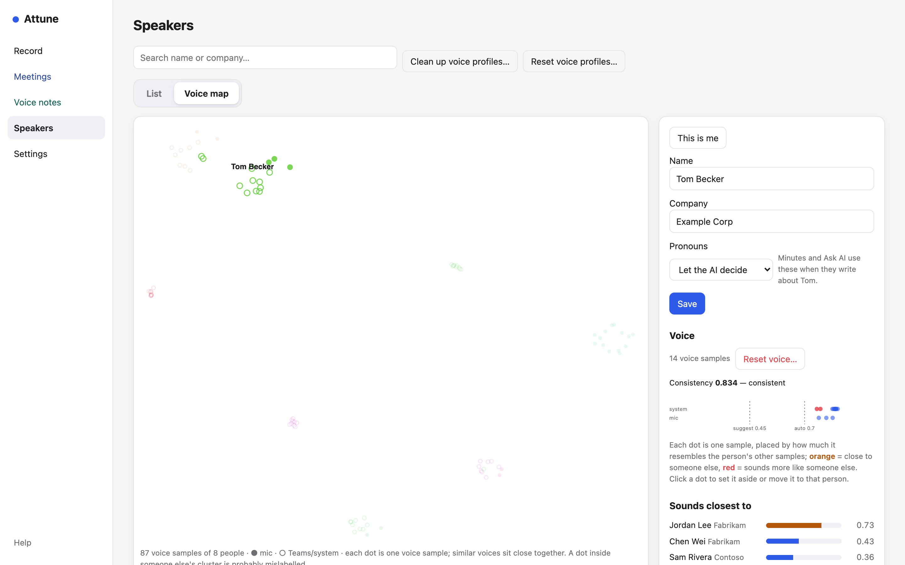
Remove samples that are too close to someone else
A wrong sample in a profile makes Attune confuse two people: a sample of Jordan filed under Tom pulls Tom's profile towards Jordan, so Jordan gets labelled Tom in the next meeting. This happens with labels imported from Quill, when two people speak at the same time, or after one wrong click. Taking such samples out makes matching more reliable for both people.
- Open the person (from the list or by clicking their dot on the map).
- Click a red or orange dot. The sample opens: which meeting it came from, ▶ Listen to what was said, and how much it resembles this person and the closest other person.
- Listen. If it is someone else, choose Move to … (it becomes a sample of the right person) or Set aside (no longer used for anyone). If it is really this person — a bad line, a cold — choose Keep.
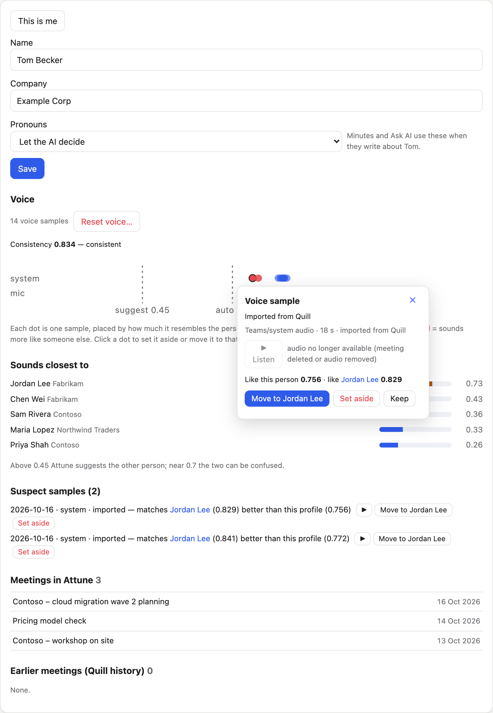
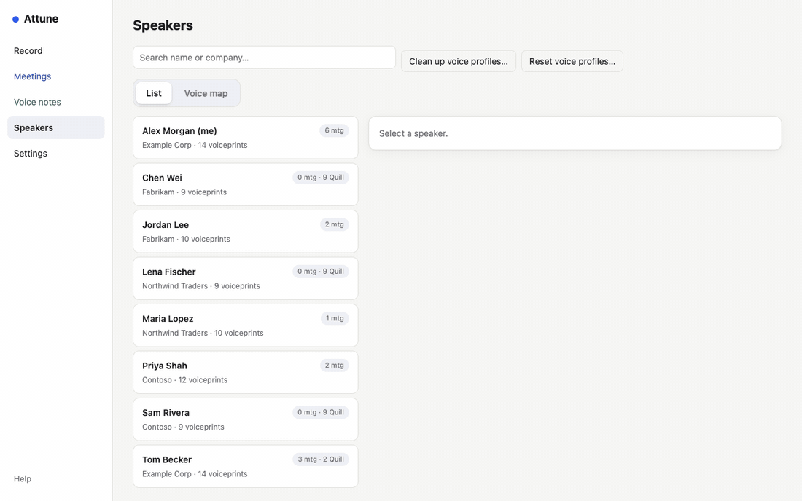
To check the whole library at once, use Clean up voice profiles… at the top. It lists every sample that sounds more like someone else than the person it is filed under, and very short samples that resemble nothing else of that person. Untick any you want to keep and press Set aside. Samples you named yourself are never set aside automatically; they are listed separately for you to decide.
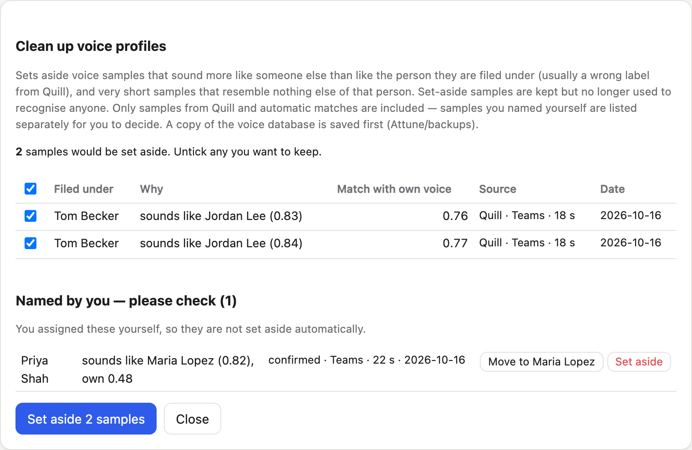
Reset
Reset voice… on a profile, or Reset voice profiles… for everyone (or only the samples imported from Quill), forgets the voice samples; people, names and companies stay. Attune learns the voices again as you name speakers. Voiceprints never leave your Mac.
Settings
Settings has seven tabs. Most changes apply when you press Save settings; languages, formats and Tokenomics prices are saved right away.
General: engines and AI
- Transcription engine — OpenAI (cloud, fast), Local Whisper (on your Mac, all languages) or Apple SpeechTranscriber (on your Mac, fastest; English, German and French). Engine for confidential meetings is always one that runs on your Mac.
- AI for topics, client detection and outputs — the OpenAI or Anthropic API with your own key, your Claude or ChatGPT subscription through their command-line tool (no API key, no cost per meeting), or the built-in model that runs entirely on your Mac. Each has a main model and a lighter model during meetings for the live client and topic detection. Test AI provider checks it works.
- Display — text size of the whole app.
Recording
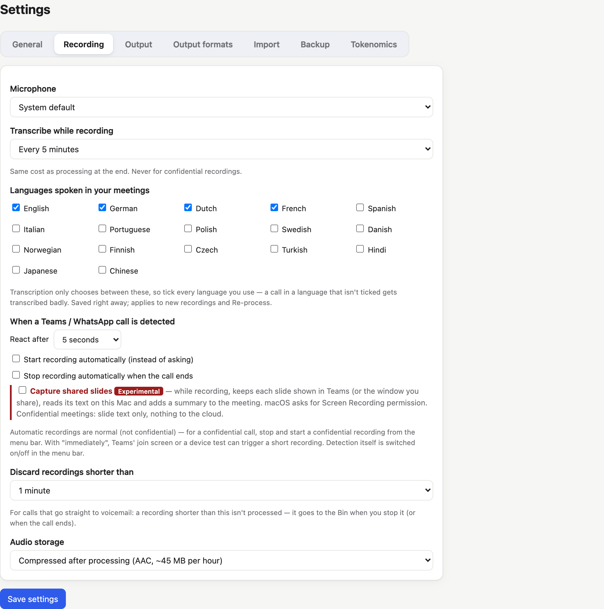
- Microphone and Transcribe while recording (a live transcript every few minutes; same cost, never for confidential meetings).
- Languages spoken in your meetings — transcription only chooses between the languages you tick, so tick every language you use.
- When a Teams / WhatsApp call is detected — how fast Attune reacts, and whether it starts and stops recording by itself instead of asking.
- Capture shared slides (experimental) — keeps every slide shown in the call and reads it; see Slides.
- Discard recordings shorter than — for calls that went to voicemail. Audio storage — compressed (about 45 MB per hour) or WAV.
Output
- Output language for AI texts such as slide descriptions, and the transcript format (Markdown or text).
- How I write and Examples of my writing — the drafts from voice notes follow these.
- Output folders — where Publish saves the transcript, for example your Obsidian vault.
Output formats
The formats under Create output. Edit the built-in ones (Restore default brings them back), duplicate one, or make your own; the chips insert the title, client, date, participants or your own name. See Minutes, Teams and WhatsApp messages.
Import
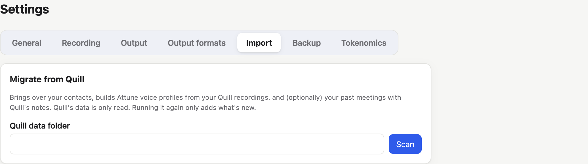
Brings over contacts, voice profiles built from your Quill recordings and, if you want, past meetings with Quill's notes. Quill's data is only read; running it again only adds what's new. Profiles you already changed in Attune are listed so you can choose whether Quill may update them.
Backup
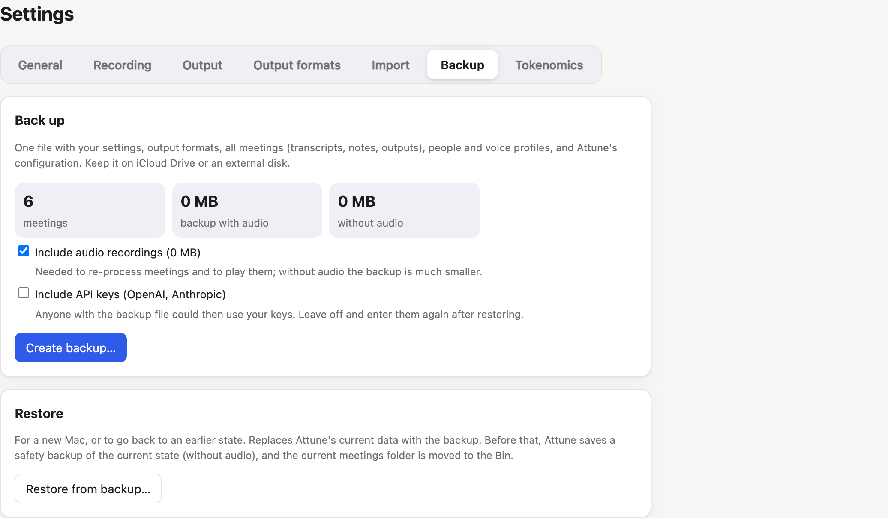
One file with your settings, formats, meetings, people and voice profiles; audio and API keys are optional. Keep it on iCloud Drive or an external disk. Restore moves to a new Mac or back to an earlier state; Attune first saves a safety backup of what it replaces.
Tokenomics
What the AI work costs — see the next chapter.
Tokenomics: what it costs
Every AI request is counted: how many tokens, what it cost, and what it was for. Settings › Tokenomics shows it per day, month, purpose, client, meeting and voice note, so you see what your meeting habits cost.
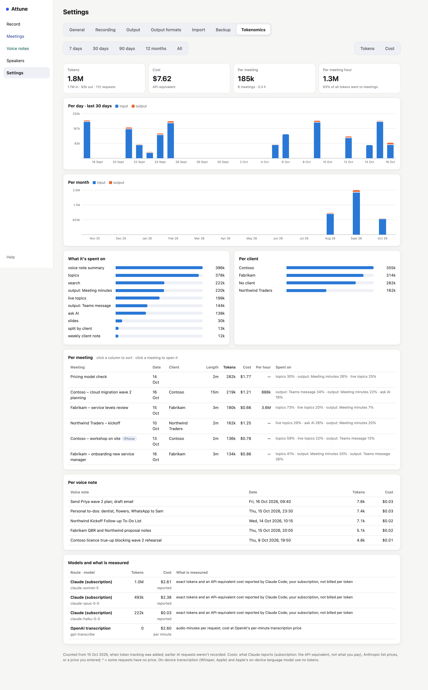
Period and Tokens or Cost
At the top choose the period (7, 30 or 90 days, 12 months, or all) and whether every number shows Tokens or Cost. Hover a bar for the details of that day or month.
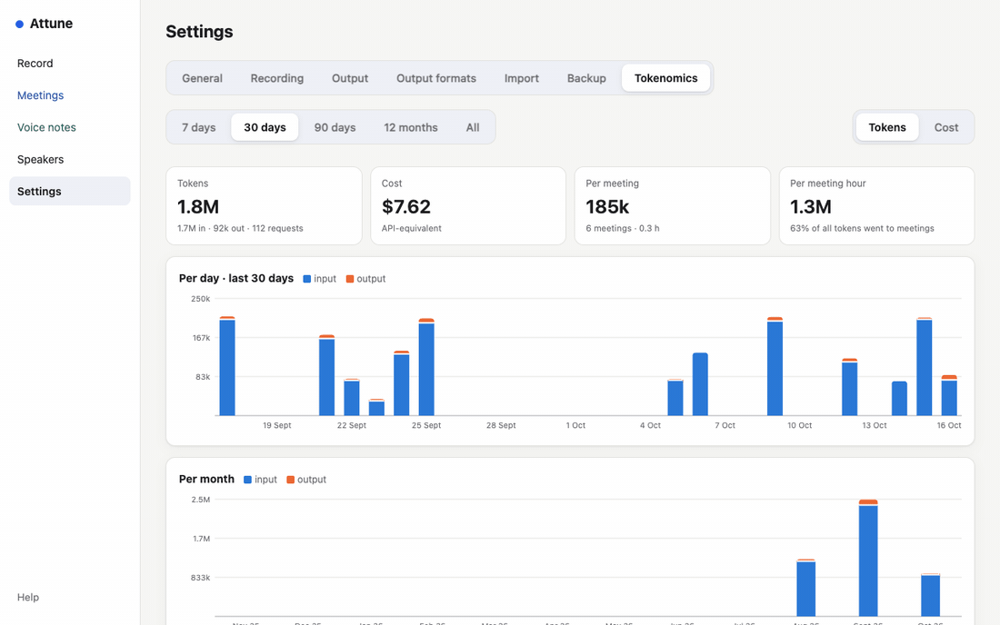
The four tiles
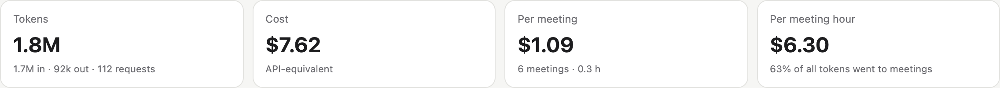
- Tokens — everything sent to the AI (in) and written by it (out), and the number of requests.
- Cost — the total for the period. An asterisk means some requests have no price yet (see below).
- Per meeting and Per meeting hour — the average, the most useful number to compare: a long meeting with minutes and a Teams message costs more than a short one with none.
What it's spent on, and per client
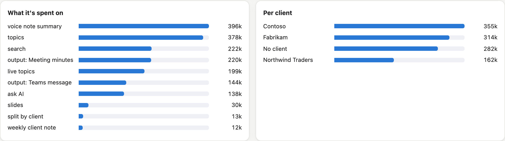
What it's spent on shows which work uses the most: voice notes, topics, minutes and other outputs, Ask AI, search, and the live topics if Transcribe while recording is on. Per client adds the number of meetings and hours, so you see which client relationship costs what.
Per meeting and per voice note
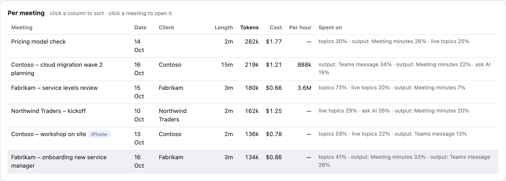
Sort by Per hour to find meetings that were unusually expensive — usually many outputs, a long Ask AI conversation or re-processing. Voice notes have their own table below it.
Models and what is measured
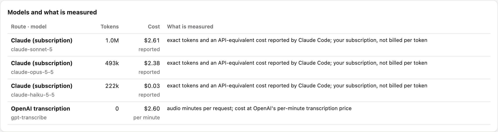
| Route | Tokens | Cost |
|---|---|---|
| Claude subscription | exact | the API-equivalent price Claude reports — not what your subscription costs |
| Anthropic API | exact | Anthropic list prices |
| OpenAI, ChatGPT subscription (Codex) | exact | only after you enter a price per million tokens in this table |
| Built-in model | counted on your Mac | free |
| OpenAI transcription | audio minutes | per minute |
When a model has no price, the table shows two boxes: enter the price per million input and output tokens and press Save price; earlier requests are re-priced too. Transcription with Whisper or Apple, and Apple's on-device search, use no tokens. Counting started on 15 October 2026; earlier requests weren't recorded.
Privacy and confidential meetings
- Everything Attune stores is on your Mac, in
~/Library/Application Support/Attune/. There's no Attune server and no telemetry. - Confidential (tick it before recording, or choose it when a call is detected): transcription on your Mac, speakers matched locally, no cloud AI. With the built-in model as AI provider, minutes and Ask AI still work — entirely on your Mac.
- Cloud features send only what they need: the audio to OpenAI if OpenAI transcribes; the transcript to your AI provider for minutes and Ask AI. Voiceprints never leave your Mac.
- Deleted meetings go to the macOS Bin, and every deletion is logged.
Keyboard shortcuts
| Keys | Where | Does |
|---|---|---|
| ⌃⌥N | any app | Start a voice note; again to save it |
| ⌃⌥S | any app, during a recording | Capture the slide shared right now |
| ⌥ Space (hold) | Meetings | Voice command: "open the last meeting with Priya" |
| ⌘R · ⌘P · ⌘S | Attune | Start · pause/resume · stop recording |
| Space | a meeting | Play from the selected line |
| Delete | a meeting | Remove the selected line (with undo) |
| ⌘↵ | an output | Apply the AI change you typed |
| ⌥-click a heading | Meetings, Voice notes | Fold or unfold everything at that level |
Licence
Attune needs a licence for recording and AI features. Without one — or when it has expired — Attune opens read-only: your meetings, notes and minutes stay readable and can be copied or exported, but you can't record or create new outputs.
Enter a licence
- A personal copy of Attune has your licence built in — nothing to do.
- Otherwise you receive a small .attunelicense file: double-click it, or choose Attune › Enter Licence… (also on the licence screen and in Settings › General).
Settings › General shows who the licence is for and until when; About Attune shows it too.
A licence for one Mac
Some licences are tied to one Mac. The licence screen shows this Mac's code with a Copy button — send it when you ask for a licence. The code is derived from your Mac's hardware ID; it identifies nothing else and is never sent anywhere by Attune.
Troubleshooting and FAQ
My voice is missing, or the "Me" level stays flat
macOS may not have given Attune microphone access: System Settings › Privacy & Security › Microphone. Check which microphone Attune uses in Settings › Recording — AirPods switching in or out changes it.
The other participants are missing
Allow System Audio Recording for Attune in System Settings › Privacy & Security. With headphones, make sure the call's sound goes through the Mac (not a separate phone).
Lines of the other participants appear under my name
Without headphones your microphone picks them up. Attune removes most of this echo; delete leftovers with Delete. Headphones avoid it completely.
The wrong person is named
Click the name and re-assign — for one line, or for everyone in that voice group. Attune learns from it for later meetings.
Minutes come out in the wrong language
Attune writes outputs in the language most of the meeting was spoken in. To force a language, use Change this text with AI: "translate to English".
Nothing arrives from the iPhone
Both devices need the same Apple ID with iCloud Drive on. The iPhone's History shows Waiting until it's online; the first upload of a new install can take a few minutes.
Attune says it isn't licensed
Double-click your .attunelicense file, or Attune › Enter Licence…. If it says the licence is for another Mac, ask for a new one with the code from the licence screen; if it has expired, ask for a renewal. Your data is untouched either way.
Attune doesn't start
Look at ~/Library/Logs/Attune/server.log and send it along when you ask for help.
Support
Can't find the answer here? Write to support@crankywalrus.dev.
Help us help you
- Your Attune version (Attune › About Attune) and macOS version.
- What you did, what you expected, and what happened instead. A screenshot helps.
- For problems with recording or starting: the log file
~/Library/Logs/Attune/server.log.
Licences
For a new licence, a renewal or a licence for another Mac, write to the same address and include this Mac's code from the licence screen (see Licence).
Your data and privacy
Everything Attune stores stays on your Mac; we can't see your meetings, notes or voices. Read the privacy policy, or write to privacy@crankywalrus.dev with questions about it.